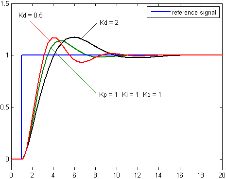

Проект TechnoWorks «Quadrocopter»
Квадрокоптер — небольшое летающее устройство с четырьмя винтами, управляемое микроконтроллером
Немного о коптерах
- Стали доступны относительно недавно
- По конструкции — проще самолета или вертолета
- Высокая маневренность
- Используются в т. ч. для фотосъемки
- Необходима автоматическая стабилизация из-за малых размеров

Наша реализация
- Плата управления
- Arduino Due (ранее — Arduino Uno)
- Акселерометр и гироскоп InvenSense MPU-6050
- Компас Honeywell HMC5883L
- Код на C++

Алгоритм стабилизации
- Управляем второй производной координат и углов \[ \begin{cases} J\ddot{\alpha}=M(t)\\ m\ddot{x}=F(t) \end{cases} \]
- Задаем \( M(t) \) и \( F(t) \) в зависимости от текущего состояния и предыстории
- Одно из решений — ПИД: \( M(t)\mathrel{:}=K_p\cdot\alpha(t)+K_i\cdot\int\limits_0^t\alpha(\tau)d\tau+K_d\cdot\frac{d\alpha}{dt}(t) \)
ПИД-регулятор
Типичный переходный процесс

Датчики
ПИД требует углы (\(\Psi,\,\theta,\,\Phi\))
| Датчик | Измеряет | Можно получить |
|---|---|---|
| MEMS-гироскоп | \(\vec{\omega}\) | \( \theta \) и \( \Phi \) |
| Акселерометр | \(\vec{W}\) | |
| Цифровой компас | \(\vec{B}\) | \(\Psi\) |

Управление
- Пульт ДУ
- ПК связан с коптером по радио (xBee)
- Данные с коптера на ПК (real time)


Наши контакты
team@technoworks.ru
Twitter: technoworks_ru
http://technoworks.ru
(http://letnyayashkola.org)